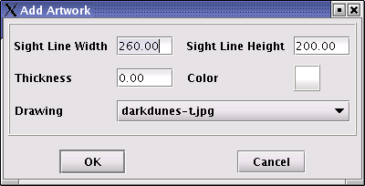
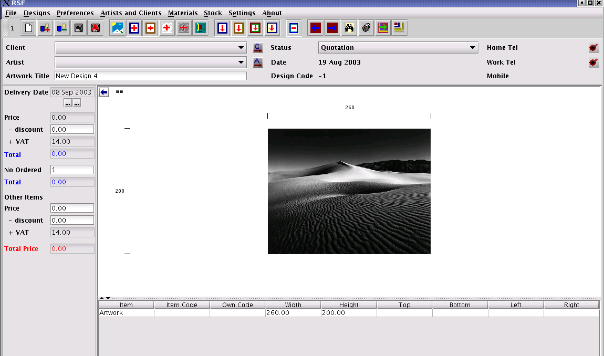
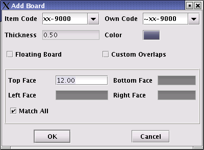
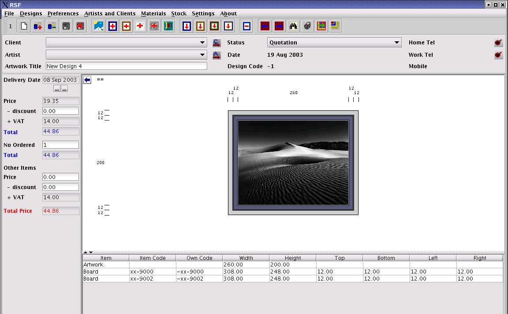
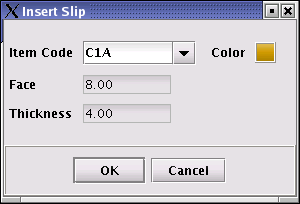
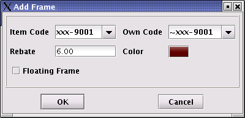
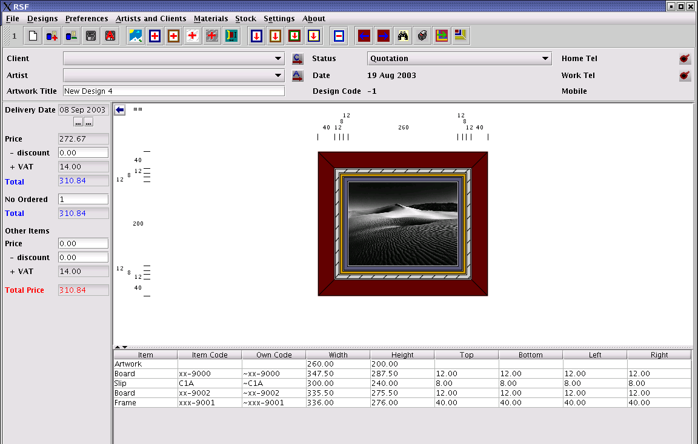
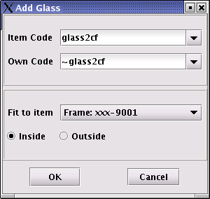
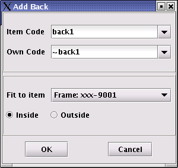
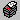

Open a new design by clicking on the
 button. Note that users can save the design throughout the design
process to prevent loss of information.
button. Note that users can save the design throughout the design
process to prevent loss of information.
The following window will be displayed.

Enter
the sight line measurements of the artwork in the space provided.
Note that the sight line measurements will usually be smaller than
the size of the artwork itself. A colour can be selected to
represent the artwork, or if the artwork was scanned and saved in
the correct directory, the artwork can be selected from the dropdown
box. If the artwork is not to be added at this stage, select none.
The follwing window will be displayed after the filename
'darkdunes-t.jpg' has been selected.

Add mount board 1 by clicking the
button. The following window will be displayed.

Select
the item code from the Item Code dropdown box. If the colour
displayed on the screen does not match the colour of the board,
click on the colour indicator and select a more appropriate colour.
Note that an item code must be selected before the colour indicator
will become active. The colour chooser has three different methods
of selecting colours. Users can choose the method which they find to
work the easiest.
There are variation in the rendering of colours by different computer screens and as a result users must specify the colours themselves. Once specified however, the colours will be rendered the same in consecutive designs.
Users also has the option to specify cutom overlaps. If custom overlaps are not enabled, RSF will apply the settings specified in the Method Preferences.
Enter the face measurement values of the edges. If the user wants the face measurements of all four edges to be equal, the Match All checkbox should be checked. In this instance, it will only be necessary to supply the top face measurement.
Click OK to return to the main window. Repeat the process to
add mount board 2. When adding mount board 2, do not check the Match
All checkbox and enter the different face measurements of all
four edges. After both mount boards have been added, the design will
be diplayed in the main window as shown below.

Add a slip to the design by selecting the material item which will be on
the outside of the slip and click the
button. The following window will be displayed. Note: Select
material items by clicking on the item in the graphical display or
by double-clicking on the material item in the material item list.
Remember to double check the rebate measurement.

Select
the correct slip from the item code dropdown box and adjust the
colour if needed. Click on the OK button.
Add a frame by clicking on the
button. The following window will be displayed. Remember to double
check the measurements of the rebate. Do this by selecting Materials
| Frames on the Main toolbar and then locating the frame by using
the find ()
function.

The new design with the slip and frame will now be displayed in the main
window.

Add glass by clicking on the
button. The following window will be displayed. The size of the
glass is determined by fitting the glass to a certain material item.
Select the material item to which the glass must fit, in this case
the frame, and select whether the glass must fit to the inside or
outside of that material item.

Add the back by clicking on the
button. The following window will be displayed. The size of the back
is determined by fitting the back to a certain material item. As in
the case with the glass, select the material item to which the glass
must fit and specify whether it must fit to the inside or outside of
that material item.

The finished design will then be graphically displayed in the main window. Add client details by clicking on the button and artist details by clicking on the button or select an existing client and artist from the dropdown boxes.
Print a cutting list and a stock list by setting the design status to 'In Order' and then clicking on the Print () button.